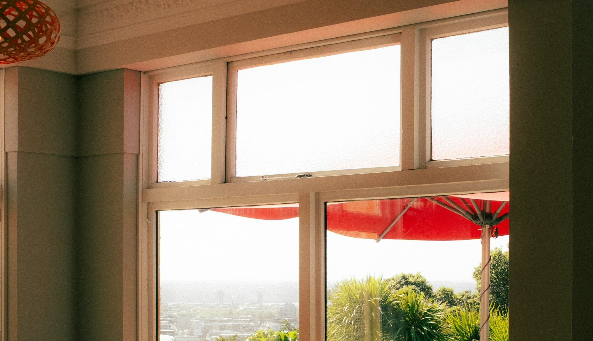
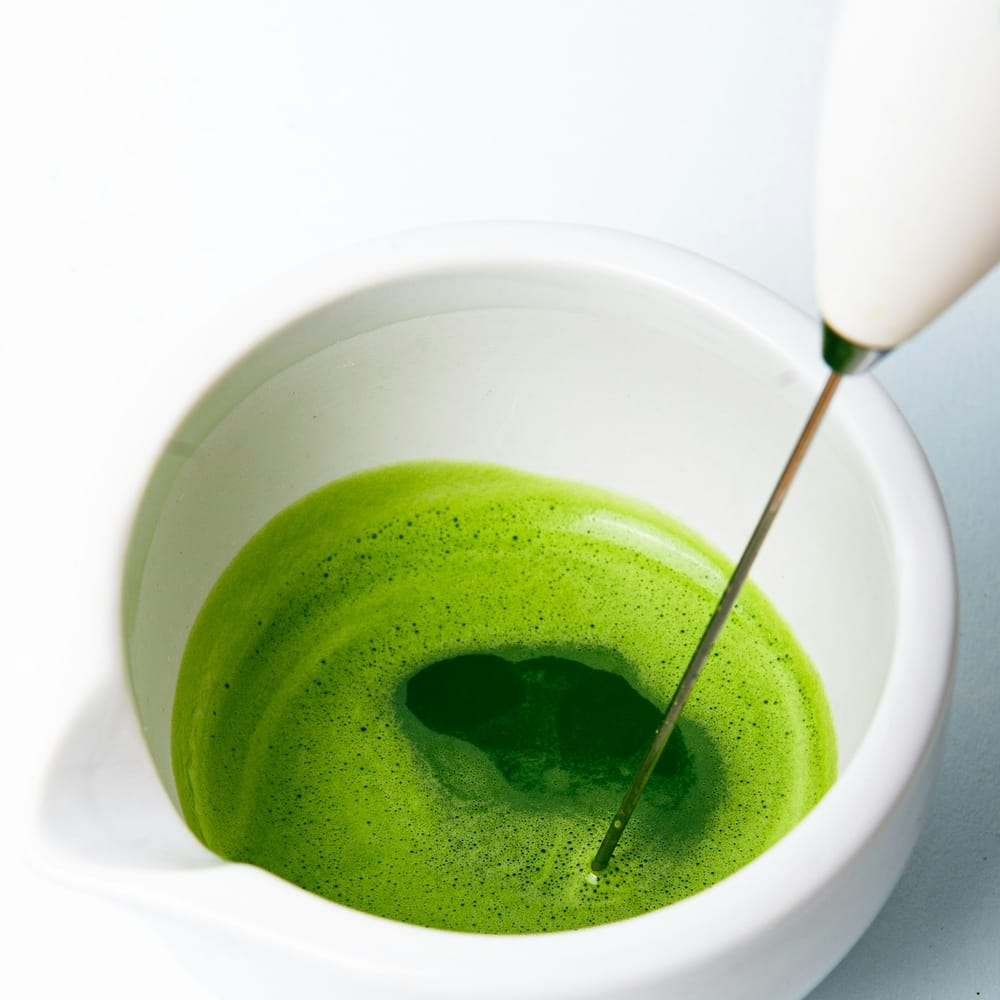
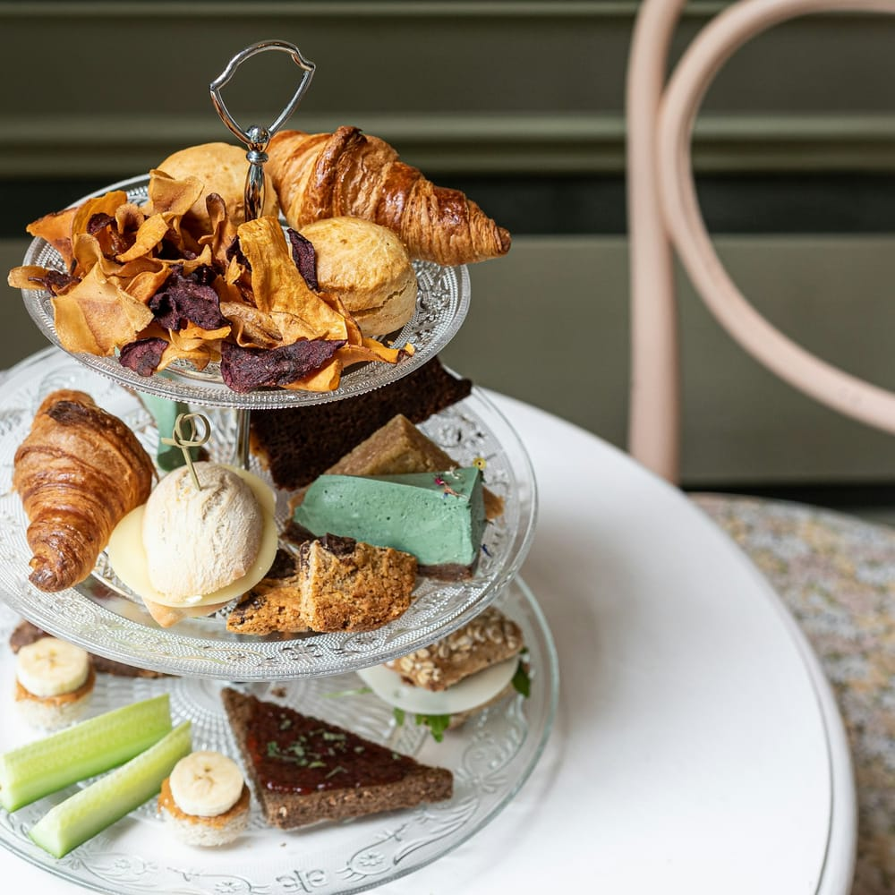
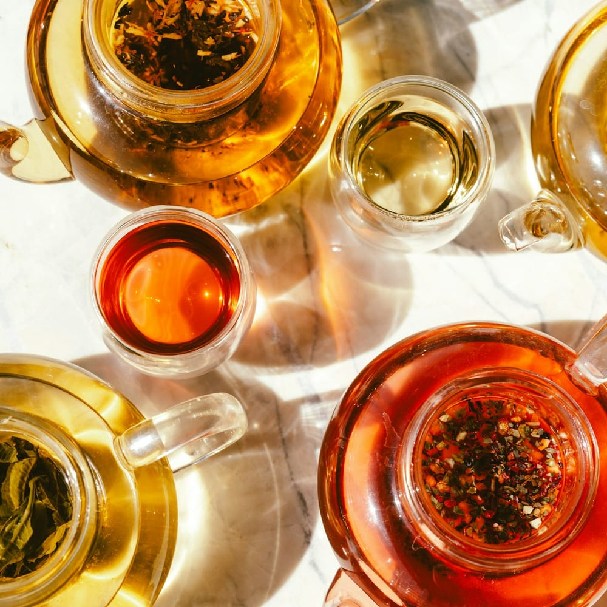
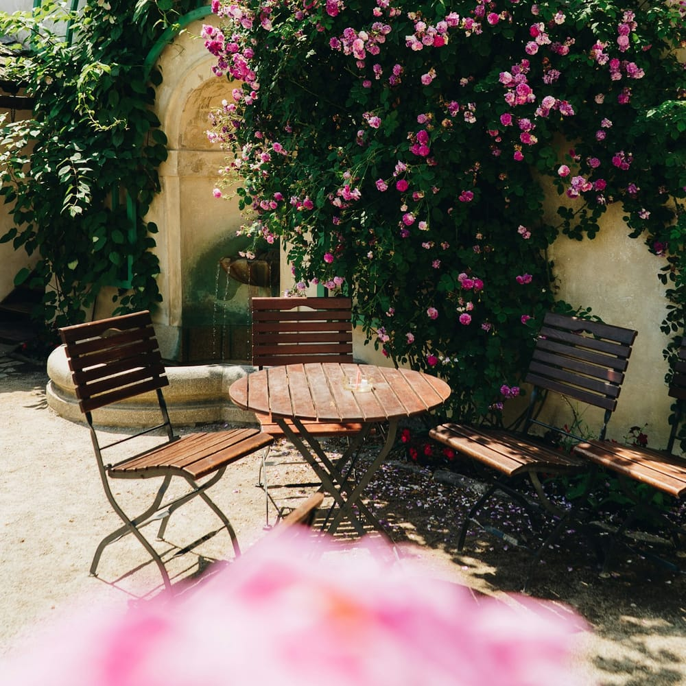

Green
Dragon Well (Longjing)
Hangzhou, China
- Fresh grass
- Toasted chestnut
- Honey
One of China's most revered green teas, hand-pressed in a wok to produce flat, jade-green leaves with a gentle, sustained sweetness.
Cup £4.20

Edinburgh · Since 2018
Curated teas from the world's finest gardens, afternoon tea service, and a still corner of Edinburgh where time moves slowly.
House Favourites
Green
Hangzhou, China
One of China's most revered green teas, hand-pressed in a wok to produce flat, jade-green leaves with a gentle, sustained sweetness.
Black
Darjeeling, India
The champagne of teas — harvested in March from steep mountain gardens, producing a pale amber cup of extraordinary delicacy.
Oolong
Anxi, China
Iron Goddess of Mercy — a lightly oxidised oolong with famously complex floral top notes and a long, sweet aftertaste.
Matcha
Uji, Japan
Stone-ground from the youngest shaded leaves, our ceremonial grade matcha is whisked to order — intensely green, silky, and profoundly alive.
Any tea on the list, brewed for you at the right temperature.
From £3.20 a cup
See the teasA pot for the table, with free hot-water top-ups.
From £5.80 a pot
See the teasSandwiches, scones and cakes on the three-tier stand, with a pot of your choice.
From £28 per person
Afternoon teaThe Full List
Every tea on our list is sourced directly or through small specialist importers. All pots include free hot-water top-ups.
Delicate & vegetal
£4.20 cup
£7.50 pot
Hangzhou, China
One of China's most revered green teas, hand-pressed in a wok to produce flat, jade-green leaves with a gentle, sustained sweetness.
Medium caffeine
£5.50 cup
£9.80 pot
Uji, Japan
Shade-grown for three weeks before harvest, gyokuro develops an extraordinary depth of umami rarely found in any other tea.
High caffeine
£4.50 cup
£8.00 pot
Jiangsu, China
Tightly spiral-rolled tender buds harvested in early spring beside fruit orchards — the proximity lends a subtle stone-fruit perfume.
Medium caffeine
Robust & warming
£4.80 cup
£8.50 pot
Darjeeling, India
The champagne of teas — harvested in March from steep mountain gardens, producing a pale amber cup of extraordinary delicacy.
Medium caffeine
£5.00 cup
£8.80 pot
Yunnan, China
Made exclusively from golden-tipped buds of ancient Yunnan trees, this tea produces a rich, warming cup without any bitterness.
High caffeine
£3.80 cup
£6.80 pot
Blend (Assam base)
Our house Earl Grey uses a full-bodied Assam base balanced with true bergamot oil from Calabria — bright, aromatic, and wonderfully familiar.
Medium caffeine
Complex & layered
£4.60 cup
£8.20 pot
Anxi, China
Iron Goddess of Mercy — a lightly oxidised oolong with famously complex floral top notes and a long, sweet aftertaste.
Medium caffeine
£4.80 cup
£8.50 pot
Nantou County, Taiwan
A medium-roast oolong from the Frozen Summit mountain. The slow charcoal-roasting develops caramel richness while preserving a fruity core.
Medium caffeine
Caffeine-free & gentle
£3.50 cup
£6.20 pot
Egypt / South Africa
A twilight blend — whole chamomile flowers with naturally sweet honey bush from the Cape. Caffeine-free and gentle.
Caffeine-free
£3.20 cup
£5.80 pot
Norfolk, England
Single-origin British peppermint grown in the Norfolk fens. Vibrantly fresh, intensely minty, and welcome at any hour.
Caffeine-free
£3.50 cup
£6.20 pot
Blend (Egypt / Bulgaria)
A ruby-red cup of dried hibiscus flowers and whole Damask rose petals. Vibrant and tart, beautiful served iced in summer.
Caffeine-free
Stone-ground & vivid
£5.80 cup
Uji, Japan
Stone-ground from the youngest shaded leaves, our ceremonial grade matcha is whisked to order — intensely green, silky, and profoundly alive.
High caffeine
£5.20 cup
Uji, Japan
Ceremonial matcha whisked with a splash of hot water, then finished with your choice of oat, almond, or whole milk, lightly steamed.
Medium caffeine
Contains: milk
Caffeine varies with the leaf, how much you use, the water temperature and the steep time, so the level shown is a guide.
Our kitchen handles wheat, oats, milk, eggs, fish, almonds and sesame, so we cannot promise any item is free of them, even those marked vegan or plant-based. Please tell us about any allergy when you book or order.
The Ritual
Served Tuesday to Sunday from 12:00 – 16:00. Booking recommended 48 hours in advance for parties of 2 or more.
The timeless ritual
Our flagship experience — an unhurried hour or more with the classic three-tier stand, served with quiet elegance at your own pace.
Elevated with champagne
Perfect for celebrations, birthdays, or simply an occasion that deserves something extra. Pre-booking essential, 48-hour notice required.
For little guests (under 12)
A gentle introduction to the tea room tradition. Children are warmly welcomed when accompanied by adults.
Fully plant-based
Everything you love about afternoon tea, thoughtfully crafted without any animal products. Please mention when booking.
Our kitchen handles wheat, oats, milk, eggs, fish, almonds and sesame, so we cannot promise any item is free of them, even those marked vegan or plant-based. Please tell us about any allergy when you book or order.
The Space





Our Story
Margaret Sinclair opened Willow & Leaf in 2018 after a decade spent travelling through China, Japan, and India, learning the art of tea at its source. She returned to Edinburgh with suitcases of samples and a conviction that the city deserved a proper tea room.
The name comes from the two things every tea begins with: the willow-green leaves plucked at first light, and the leaf itself — unremarkable until it meets hot water, at which point something extraordinary happens.
Today, Willow & Leaf sources directly from small farms and specialist importers. Every tea on the list is one Margaret has tasted herself, often many times, before it earns a place in the collection.
"There is a tea for every mood, every hour, every kind of quiet."
Book Your Visit
We recommend booking at least 48 hours ahead, especially for weekend afternoon tea. Walk-ins are welcome for tea by the cup.
Send us your name, the date, the number of guests and any dietary notes. We confirm within 24 hours.
Find Us
14 Victoria Terrace, Edinburgh, EH1 2JL